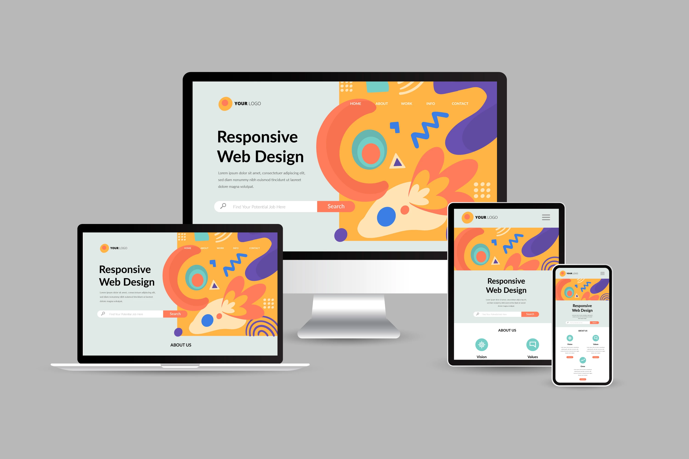

· Web ДИЗАЙН
Разрабатываю стильные и функциональные веб-интерфейсы, создавая визуально привлекательные и удобные сайты.
Разрабатываю современные и адаптивные веб-интерфейсы, учитывая последние тренды. Создаю визуально привлекательные дизайны, которые улучшают пользовательский опыт и повышают вовлеченность.
